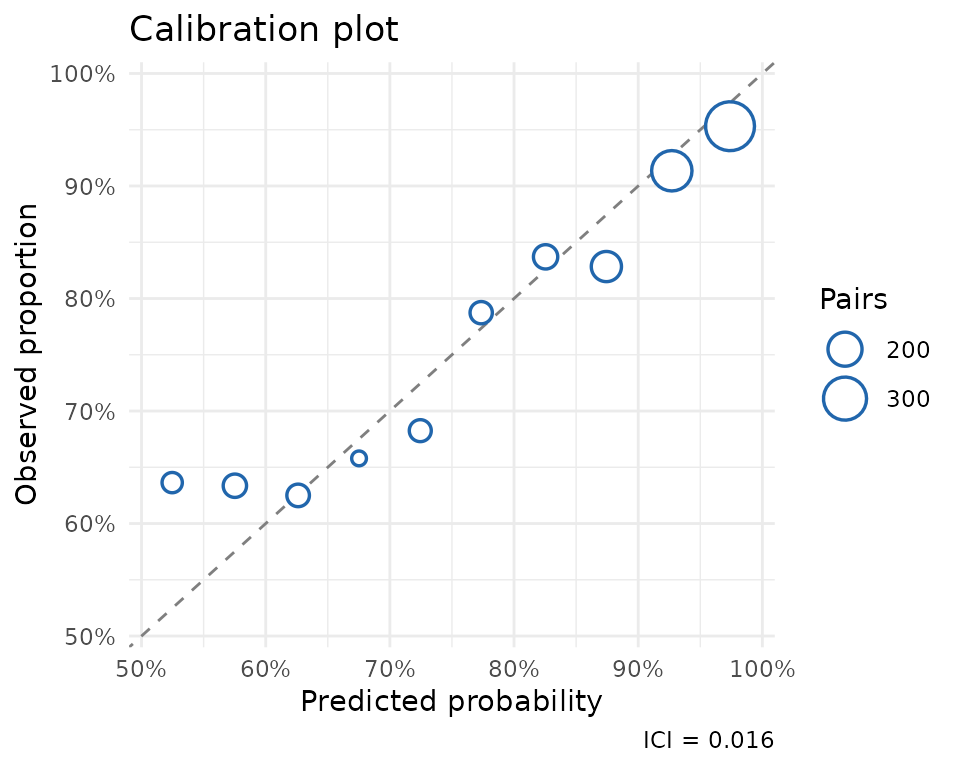
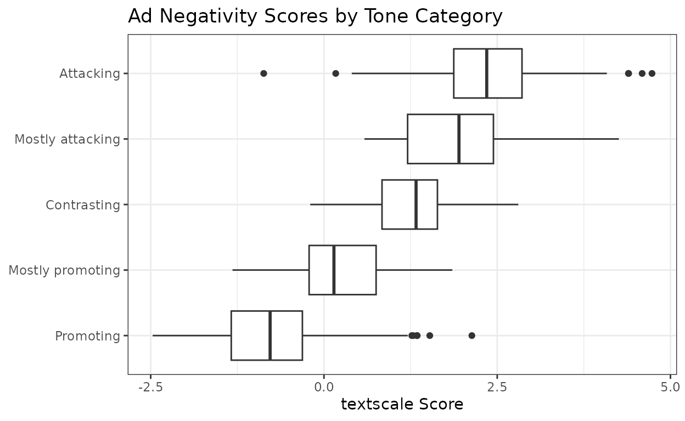
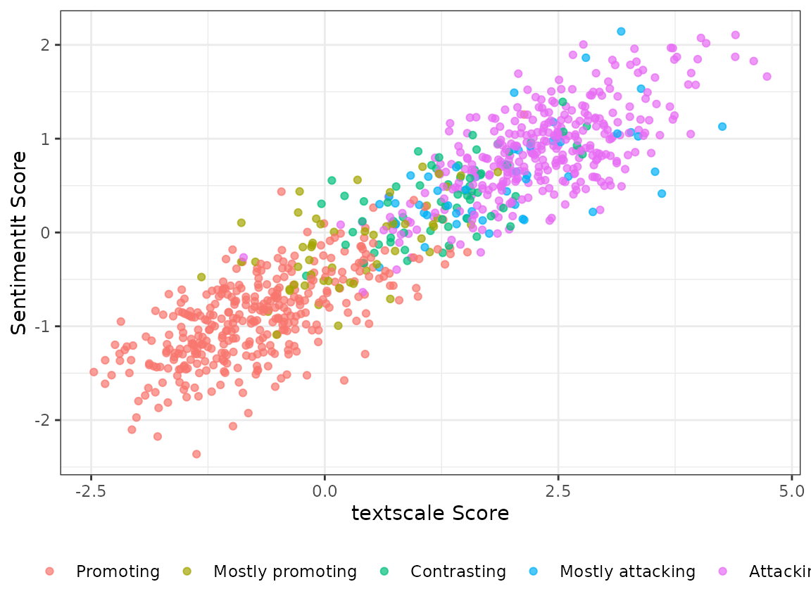

Measuring Political Ad Tone
ad-tone.RmdPolitical scientists often need to measure latent quantities from
text — concepts like negativity, ideology, argument strength, etc.
Carlson & Montgomery (2017) developed a pairwise comparison approach
to this problem which they call SentimentIt: instead of
rating each document in isolation, annotators are shown pairs of
documents and asked “Which one is more negative?” Aggregating these
judgments with a scaling model yields a continuous score for every
document.
The textscale package extends this approach by combining
pairwise annotations with text embeddings. Rather than requiring
comparisons between every pair of documents, textscale fits a ridge
logistic regression on embedding differences to identify a
direction in embedding space that separates winners from
losers. Once that direction is learned, any document can be scored by
projecting its embedding onto it — including documents that were never
directly compared.
Data
Carlson & Montgomery (2017) published the pairwise annotations
from their Wisconsin congressional ads study alongside their paper. The
ad_tone dataset bundled with textscale contains 935 ads
from that study, together with textscale scores derived
from those annotations.
data(ad_tone)
glimpse(ad_tone)
#> Rows: 935
#> Columns: 10
#> $ text <chr> "[Reporter]: \"So, what do you think about Ted Stevens?\" …
#> $ candidate <fct> ACV4CG, AKRP, BEGICH, BEGICH, BEGICH, BEGICH, BEGICH, BEGI…
#> $ state <fct> AK, AK, AK, AK, AK, AK, AK, AK, AK, AK, AK, AK, AK, AK, AK…
#> $ tone <dbl> 5, 1, 5, 1, 1, 1, 1, 1, 1, 1, 5, 1, 1, 5, 1, 1, 1, 2, 5, 5…
#> $ alphas <dbl> 0.5425661, -0.4189275, 1.1481009, -0.5677234, -0.2300523, …
#> $ score <dbl> 2.04181912, -0.35471633, 2.35130630, -1.00836144, 0.441447…
#> $ score_lower <dbl> 0.3382751, -1.9945405, 0.6609549, -2.6325612, -1.2918869, …
#> $ score_upper <dbl> 3.74536311, 1.28510787, 4.04165771, 0.61583830, 2.17478118…
#> $ split <chr> "Train Set", "Train Set", "Test Set", "Train Set", "Test S…
#> $ tone_label <fct> Attacking, Promoting, Attacking, Promoting, Promoting, Pro…Scaling with textscale
To replicate this analysis from scratch — or to apply it to your own
documents — you would run textscale() with a single
prompt:
result <- textscale(
documents = ad_tone$text,
prompt = "Which political ad is more negative toward its opponent?",
seed = 1847
)This handles the full pipeline: generating comparison pairs,
retrieving embeddings, submitting annotations to an LLM via the OpenAI
Batch API, fitting and validating the model, and returning scores for
all documents. An OpenAI API key stored in the
OPENAI_API_KEY environment variable is required.
Replicating with the crowd-sourced annotations
The cm_comparisons dataset contains the original
crowd-coded pairwise comparisons from Carlson & Montgomery (2017).
You can use these to estimate textscale scores directly
without any calls to the LLM.
# 1. Get embeddings for each ad
emb <- get_embeddings(ad_tone$text)
# 2. Fit model on cm_comparisons (train set only by default)
mod <- fit_model(cm_comparisons, emb)
# 3. Check model calibration against held-out ads
validate_model(mod, cm_comparisons, emb)
# 4. Fit final model on all pairwise comparisons
mod <- fit_model(cm_comparisons, emb, refit = TRUE)
# 5. Project scores
scores <- score_documents(mod, emb, ci = TRUE)Validation
The ad_tone_validation object contains the results of
evaluating the model on a held-out 20% test split of documents.
data(ad_tone_validation)
print(ad_tone_validation)
#> textscale model validation
#>
#> # A tibble: 1 × 4
#> n_pairs n_correct accuracy ici
#> <int> <int> <dbl> <dbl>
#> 1 3421 2729 0.798 0.0162The model correctly predicts the more negative ad in about 80% of held-out comparisons. The calibration plot confirms that predicted probabilities track observed frequencies closely across the full range (ICI = 0.016).
plot(ad_tone_validation)
Scores by tone category
The Wisconsin Advertising Project (WiscAds) assigned each ad a
five-point tone code ranging from purely promotional to purely
attacking. The textscale scores align well with these
categories, with the score distributions shifting upward as the ads
become more negative.
ad_tone |>
filter(!is.na(tone_label)) |>
ggplot(aes(x = score, y = tone_label)) +
geom_boxplot() +
labs(
x = "textscale Score",
y = NULL,
title = "Ad Negativity Scores by Tone Category"
) +
theme_bw()
Correlation with SentimentIt scores
Because the human annotations used to fit the textscale
model are the same ones Carlson & Montgomery (2017) used for their
SentimentIt model, the two sets of scores are highly correlated — but
they need not be identical, since textscale uses the
annotations to learn a direction in embedding space rather than fitting
a SentimentIt model directly.
ad_tone |>
filter(!is.na(tone_label)) |>
ggplot(aes(x = score, y = alphas, color = tone_label)) +
geom_point(alpha = 0.7, size = 1.5) +
labs(
x = "textscale Score",
y = "SentimentIt Score",
color = NULL
) +
theme_bw() +
theme(legend.position = "bottom")
Scoring new documents
Once the model is fit, scoring new documents requires only their embeddings — no additional pairwise annotations. Here are three hypothetical ads placed on the negativity scale:
new_ads <- c(
"I will work hard every day in Congress for my constituents. The people
of Wisconsin are kind, hard-working, and patriotic, and I will do my
best to emulate their example. Thank you for your support.",
"Bob McDermott spent over a million dollars in taxpayer funds on a lavish
vacation in the Bahamas, all while voting to gut Social Security. The
Wall Street Journal calls him one of the five most corrupt members of
Congress. Vote to restore sanity to Congress.",
"Washington is broken, and we need someone from outside the system to fix
it. I am a plumber with 25 years of experience, so I know a thing or two
about fixing things. Jim Hokstra has never fixed anything in his life."
)
new_embeddings <- get_embeddings(new_ads)
score_documents(result$model_final, new_embeddings)#> score lower upper
#> [1,] -3.20 -3.67 -2.73 # promotional
#> [2,] 3.57 3.07 4.07 # attack
#> [3,] 0.81 0.35 1.27 # contrastThe purely promotional ad scores near the bottom of the scale, the attack ad near the top, and the contrast ad falls in between — consistent with what the tone categories would predict.
References
Carlson, T. N., & Montgomery, J. M. (2017). A pairwise comparison framework for fast, flexible, and reliable human coding of political texts. American Political Science Review, 111(4), 835–843. https://doi.org/10.1017/S0003055417000302